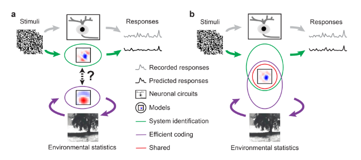
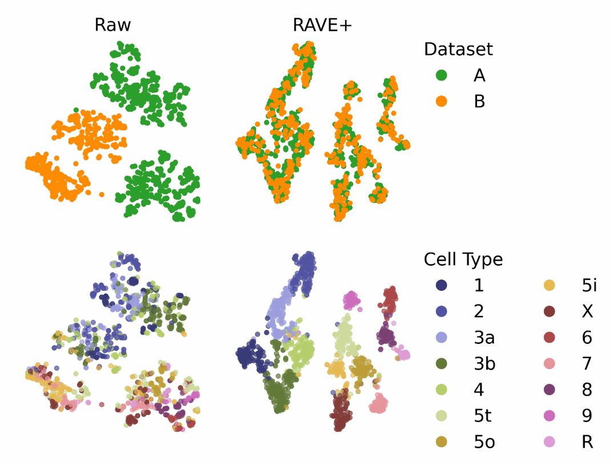
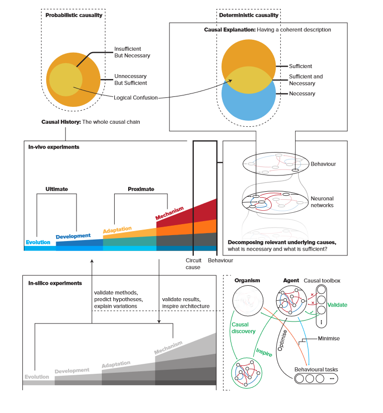

|
Research Interest
The human brain is the most sophisticated and complex system in the universe.
|
|

|
Efficient coding of natural scenes improves neural system identification
Yongrong Qiu,
David A. Klindt,
Klaudia P. Szatko,
Dominic Gonschorek,
Larissa Höfling,
Timm Schubert,
Laura Busse,
Matthias Bethge,
Thomas Euler,
bioRxiv, 2022;
paper /
Neural system identification aims at learning the response function of neurons to arbitrary stimuli using experimentally recorded data,
but typically does not leverage normative principles such as efficient coding of natural environments. Visual systems, however,
have evolved to efficiently process input from the natural environment. Here, we present a normative network regularization for
system identification models by incorporating, as a regularizer, the efficient coding hypothesis, which states that neural response
properties of sensory representations are strongly shaped by the need to preserve most of the stimulus information with limited resources.
Using this approach, we explored if a system identification model can be improved by sharing its convolutional filters with those of an
autoencoder which aims to efficiently encode natural stimuli. To this end, we built a hybrid model to predict the responses of retinal
neurons to noise stimuli. This approach did not only yield a higher performance than the “stand-alone” system identification model, it
also produced more biologically-plausible filters. We found these results to be consistent for retinal responses to different stimuli
and across model architectures. Moreover, our normatively regularized model performed particularly well in predicting responses of
direction-of-motion sensitive retinal neurons. In summary, our results support the hypothesis that efficiently encoding environmental
inputs can improve system identification models of early visual processing.
|
|

|
Removing Inter-Experimental Variability from Functional Data in Systems Neuroscience
Dominic Gonschorek*,
Larissa Höfling*,
Klaudia P. Szatko,
Katrin Franke,
Timm Schubert,
Benjamin Dunn,
Philipp Berens,
David A. Klindt,
Thomas Euler*
NeurIPS, 2021 (Spotlight)
paper /
code
Inter-experimental variability is commonly overlooked in systems neuroscience.
We show how this leads to problems in the case of retinal cell type classification.
As a solution we propose a flexible model, based on recent machine learning
advances in domain adaptation, that removes this variability to unmask biological effects.
|
|

|
Neuronal causes and behavioural effects: A review on logical, methodological, and technical issues with respect to causal explanations of behaviour in
neuroscience
Kayson Fakhar,
Dominic Gonschorek,
Lisa Schmors,
Natalia Bielczyk
PsyArXiv, 2019;
paper /
Elucidating causal, neurobiological underpinnings of behaviour is an ultimate goal of every neuroscientific study.
However, due to the complexity of the brain as well as the complexity of the human environment, finding a~causal architecture that
underlies behaviour remains a~formidable challenge. In this manuscript, we review the logical and conceptual issues with respect to causal research in neuroscience.
First, we review the state of the art interventional and computational approaches to infer causal brain-behaviour relationships.
We provide an~overview of potential issues, flaws, and confounds in these studies. We conclude that studies on the causal structure
underlying behaviour should be performed by accumulating evidence coming from several lines of experimental and modelling studies.
Lastly, we also propose computational models including artificial neuronal networks and simulated animats as a~potential breakthrough to causal brain-behaviour investigations.
|
* equal contribution.
Thanks to Jon Barron for this amazing website template.
|
|
{kind=link}